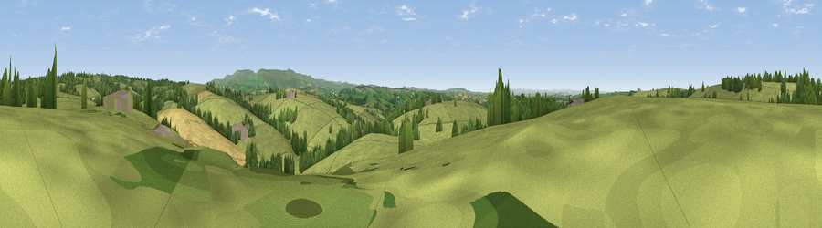

Viewpoint near Bratton Clovelly
#25418 in England · top 45% of its area beats it · near Bratton ClovellyThe view, rendered

A 360° render of this exact spot computed from the terrain model, tree cover and land cover — summer colours, afternoon light, calibrated against photographs of famous viewpoints. Real trees, hedges and buildings will differ in detail.
The panorama
Grey silhouette: terrain skyline in each direction (720 bearings, Earth curvature and refraction included). Dashed green: skyline with trees (+15 m) and buildings (+8 m) as obstacles. Blue strip: how far the ground is visible on each bearing.
Where the view opens
Wedge length = distance to the farthest visible ground on that bearing (vegetation-aware). Rings at 10, 25 and 50 km.
What fills the view
79% grassland · 12% woodland · 7% cropland · 1% built-up
Angular shares of the visible panorama (visual magnitude), not map area. Landscape diversity 0.30 (0–1 Shannon).
Key numbers
More beautiful places nearby
The staircase of upgrades: each row has a higher view potential than everything closer. Driving times are estimates from straight-line distance, calibrated against real road routing — check an actual route before setting out.
| Place | Direction | Drive | Score |
|---|---|---|---|
| Viewpoint near Germansweek | NW · 1 km | ~3 min | 51.5 |
| Viewpoint near Germansweek | WNW · 2 km | ~5 min | 52.5 |
| Viewpoint near Germansweek | W · 2 km | ~6 min | 53.6 |
| Viewpoint near Bratton Clovelly | NE · 3 km | ~7 min | 60.9 |
| Sourton Tors | ESE · 8 km | ~17 min | 74.8 |
| Viewpoint near Sourton | ESE · 9 km | ~18 min | 75.7 |
| Great Links Tor | SE · 11 km | ~20 min | 77.8 |
| Yes Tor | ESE · 12 km | ~22 min | 78.5 |
50.71697, -4.17611 · source: screening · position refined by local search. Computed location — check access rights before visiting.